古時候，當時沒有電視或是電動玩具，因此當時的玩具利用周遭的素材，利用天馬行空的創造力來製作玩具，只要有一條繩子、一顆彈珠或是一根竹子就可以玩出各式各樣的遊戲。
童玩的種類琳瑯滿目，各式各樣的特色把他們劃分為以下三大種類:竹子類、木頭類、紙類，然而又以木頭類的童玩占最大多數類型，到現今主要保存完好的童玩為木頭類型居多。
童玩的發展，分為鄉土農業、鄉土工業、近代機工、現代電子等四個時期，從古早到現代，從木頭製品漸漸的被電子產品所取代，童玩不僅是單純的玩具，也是代表著各時期的生活型態。
童玩不只是一種玩具，它還是一種民俗體育。在每個年代都有獨特的玩法，各式各樣的特色，這些童玩不僅意味著每個年代之間的社會型態、環境變遷，更是代表各時期生活藝術之美。
童玩的種類琳瑯滿目，各式各樣的特色把他們劃分為以下三大種類:竹子類、木頭類、紙類，然而又以木頭類的童玩占最大多數類型，到現今主要保存完好的童玩為木頭類型居多。
童玩的發展，分為鄉土農業、鄉土工業、近代機工、現代電子等四個時期，從古早到現代，從木頭製品漸漸的被電子產品所取代，童玩不僅是單純的玩具，也是代表著各時期的生活型態。
童玩不只是一種玩具，它還是一種民俗體育。在每個年代都有獨特的玩法，各式各樣的特色，這些童玩不僅意味著每個年代之間的社會型態、環境變遷，更是代表各時期生活藝術之美。
-

-
介紹
毽子，又叫"打雞"，為傳統的民間體育活動，歷史悠久，在明清時期時，街坊上的民間藝人畫作中都繪有踢毽的生動畫面，對男女老少都相宜，點滴時間也可以利用，活動量可以自由控制，只需要一個毽子、一塊小小的空場地就可以，不僅可以作為一種趣味娛樂的方式，還因其可以強身健體，而受到人們的喜愛和重視。 -
歷史
毽子的前身為"蹴踘"，是為了鍛鍊軍中士兵與紓解壓力的體育活動，逐漸轉為民間遊戲。
毽子起源於漢代，並盛行於南北朝及隋唐，是該朝代的青少年及兒童喜愛，然而在明朝時期，不僅盛行，且被人利用畫作或是散文記載下來，讓世人漸漸更加了解此項活動。
到了清代末年，踢毽的參加人數之多，達到踢毽的鼎盛時期。 -
玩法
毽子的玩法分為四種：
1.盤踢(腳內側踢)：盤踢是踢毽入門的基礎，可以單腳持續踢，也可以雙腳輪流踢擊，也是現在最常見的踢毽技巧。
2.磕踢(膝蓋踢)：磕踢特別適用於毽子下落時距離身體非常近的情況，這項踢擊技巧可以與盤踢交替進行，也是盤踢所衍伸的技巧。
3.拐踢(腳外側踢)：利用大腿去接踢，適用在當毽子距離身體較遠的時候，這種踢法能夠讓毽子在身體外側或斜後方皆可以觸及到。
4.繃踢(用腳尖或腳背踢)：繃踢的發力可高可低，能救起即將落地的毽子。

莊晴安
邱靖貽
張簡珮伃
王彥甯
劉炤妤
黃政揆老師